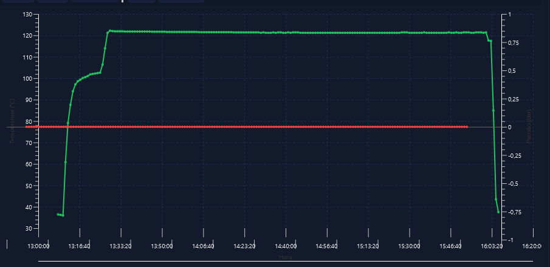

Automação industrial integrada
Controle completo da produção: da matéria-prima ao produto final. Sistemas conectados para indústria de alimentos e processos.
Portfólio de aplicações
Soluções integradas para cada etapa da produção industrial.
Sistema
Controle centralizado de produção. Gestão de cargas, autoclaves, monitoramento de parâmetros em tempo real e rastreamento de bateladas.
Ver detalhes
Processo
Monitoramento de variáveis de processo. Temperatura, pressão, tempo de ciclo e conformidade com especificações. Alertas automáticos e logs.
Ver detalhesBranqueador
Controle especializado de branqueamento e etapas relacionadas. Dosagem automática, concentração, tempo de exposição e eficácia comprovada.
Ver detalhes
Gestão de Qualidade
Novo: não-conformidades, rastreabilidade 100%, checklists tipados, plano de ação 5W2H, retenção de lote e monitoramento de PCC.
Ver detalhes e telasCaldeiras & Aquecedores Térmicos
App integrado + fornecimento de CLP para monitoramento e controle de caldeiras e aquecedores térmicos. Temperatura, pressão, consumo de vapor, eficiência energética e conformidade com normas de segurança operacional.
Ver detalhesSobre a BSI Sistemas Automação
Especialistas em automação industrial.
A BSI Sistemas Automação desenvolve soluções integradas de controle e monitoramento para indústria de alimentos, com foco especial em processos de autoclavagem, branqueamento, controle térmico e conformidade.
Nossos sistemas são projetados para garantir segurança alimentar, rastreabilidade completa, conformidade regulatória (MAPA, Anvisa, ISO 22000) e segurança operacional de caldeiras.
- Integração entre Sistema, Processo, Branqueador, Caldeiras e Qualidade
- Rastreabilidade bidirecional (matéria-prima ↔ cliente)
- Monitoramento em tempo real com alertas automáticos
- Suporte offline — funciona sem internet constante
- Mobile-first — inspeção no chão de fábrica
- Segurança comprovada com assinatura eletrônica
Stack tecnológico
- Java 21 — Backend robusto
- Spring Boot 3.3 — Web moderno
- MySQL 5.1+ — Banco de dados integrado
- Thymeleaf — Templates server-side
- Spring Security — RBAC completo
- SVG/Offline — Gráficos sem CDN
Solicitar demonstração
Entre em contato para conhecer os sistemas da BSI.
WhatsApp: (11) 99999-9999